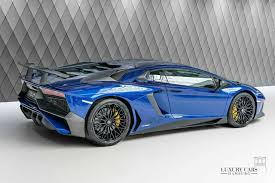
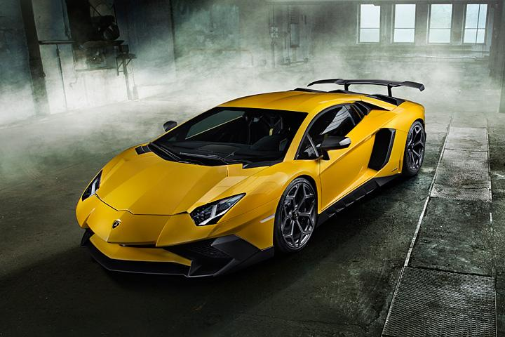
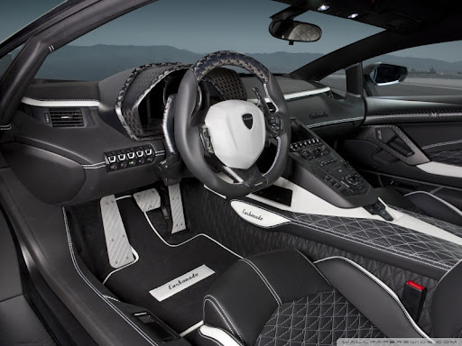

About Lamborghini avendator
Launched on 28 February 2011 at the Geneva Motor Show, five months after its initial unveiling in Sant'Agata Bolognese, the vehicle, internally codenamed LB834, was designed to replace the then-decade-old Murciélago as the new flagship model.[10][11][12]
Soon after the Aventador's unveiling, Lamborghini announced that it had sold 12 cars, with deliveries starting in the second half of 2011.[13] By March 2016, Lamborghini had built 5,000 Aventadors, in five years
"TOP SPEED 288m/H
MAX RANGE 600 MILES
PRICE 3cr INR "


